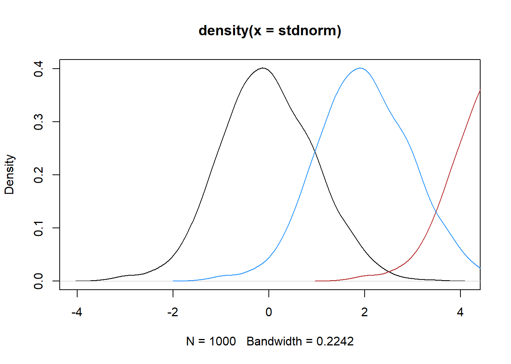
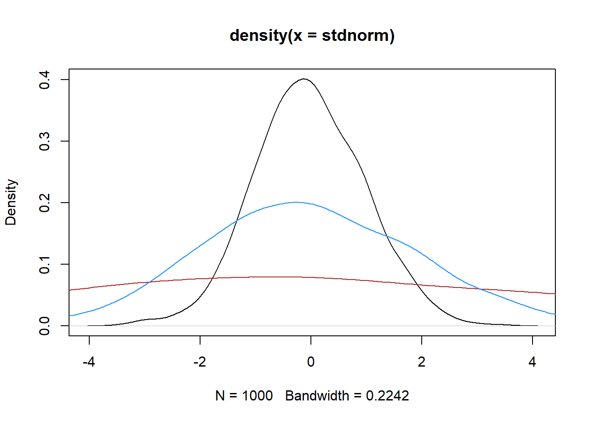
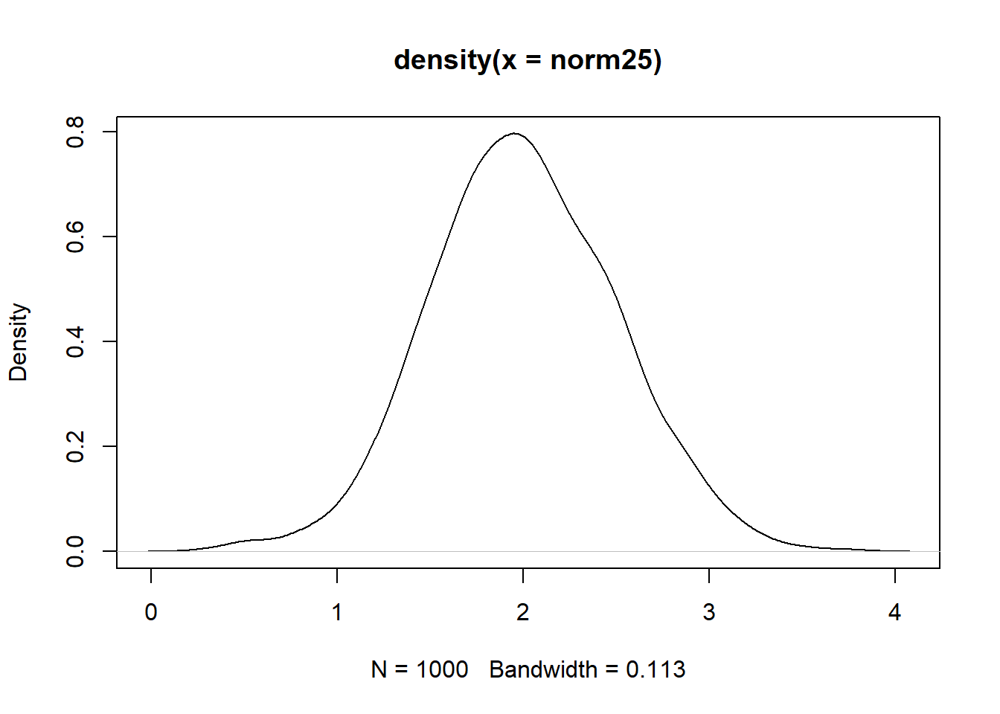

stdnorm <- rnorm(1000)Shifting distributions
Shifting normal distributions to have desired properties is straightforward, but I have to look it up every time.
I typically need to do it for two reasons (which are really the same reason, when it comes down to it), plus a third that is also the same but requires transforms and backtransforms.
- I want a distribution with some arbitrary mean and sd, and want to make it from a standard normal
- I have a generated set of random numbers (or other empirical vector) that doesn’t quite have the moments I want, so I need to adjust it slightly.
- The same issues, but with other distributions based on the normal
Setup
To have some common references, let’s get a set of random numbers from a standard normal
And set example mean and sd we want.
mean_want <- 5
sd_want <- 2Mean shifts
From 0
Mean shifts are just arithmetic. So, if we have a standard normal, we can just add the new mean we want.
norm5 <- stdnorm + mean_want
mean(norm5)[1] 4.968944From x to y
If we have a distribution with a nonzero mean (say, the one we just made) and want to shift it, we need to get the difference. This is often how we deal with correcting a set of generated numbers to have the right mean, but here I use a more extreme example.
I’m also writing this as a function with variables to see the generality.
shift_mean <- function(sample_vals, mean_want) {
mean_sample <- mean(sample_vals)
mean_shift <- mean_want - mean_sample
shiftsample <- sample_vals + mean_shift
return(shiftsample)
}norm2 <- shift_mean(norm5, 2)
mean(norm2)[1] 2This works for the simple case of the standard normal too, and unlike above, where we add 5 and get some error from the particular set of values, here the mean ends up exact because the shift isn’t 5, it’s the difference between 5 and the realised mean of the vector.
mean(shift_mean(stdnorm, 5))[1] 5I can’t be bothered making this a tibble. Though maybe I should, I really am bad at plot .
plot(density(stdnorm), type = 'lines')Warning in plot.xy(xy, type, ...): plot type 'lines' will be truncated to first
characterlines(density(norm5), col = 'firebrick')
lines(density(norm2), col = 'dodgerblue')
Standard deviation shifts
The standard deviation requires a multiplicative shift. So if we want an sd of 2, we need to multiply the standard normal by 2.
normsd2 <- stdnorm*sd_want
sd(normsd2)[1] 1.983885As with the mean, to shift from arbitrary sd to desired, we can write a function that finds the relative sds and shift.
shift_sd <- function(sample_vals, sd_want) {
sd_sample <- sd(sample_vals)
sd_shift <- sd_want/sd_sample
shiftsample <- sample_vals * sd_shift
return(shiftsample)
}So to move from the vector with sd 2 to one with sd 5
normsd5 <- shift_sd(normsd2, 5)
sd(normsd5)[1] 5And like the mean example above, we can use this to correct the realised mean of a set of random numbers, since it’s comparative to that realised mean.
sd(shift_sd(stdnorm, sd_want))[1] 2Quick plots
plot(density(stdnorm), type = 'lines')Warning in plot.xy(xy, type, ...): plot type 'lines' will be truncated to first
characterlines(density(normsd5), col = 'firebrick')
lines(density(normsd2), col = 'dodgerblue')
Both mean and sd
To shift both mean and sd together, we first shift the sd, and then the mean. Again, we can make this a function.
shift_mean_sd <- function(sample_vals,
sd_want, mean_want) {
shiftedsd <- shift_sd(sample_vals, sd_want)
shiftedboth <- shift_mean(shiftedsd, mean_want)
}Now, we can use that to create a new distribution
norm52 <- shift_mean_sd(stdnorm, sd_want, mean_want)
mean(norm52)[1] 5sd(norm52)[1] 2plot(density(norm52))And we can shift that to something different again- we don’t need to start with a standard normal.
norm25 <- shift_mean_sd(norm52, sd_want = 0.5, mean_want = 2)
mean(norm25)[1] 2sd(norm25)[1] 0.5plot(density(norm25))
So, now we have a function that can shift any arbitrary set of numbers to have a desired mean and sd.
The wrong way- order of operations
As a quick aside, it does not work to shift the mean first.
shift_mean_sd_BACKWARDS <- function(sample_vals,
sd_want, mean_want) {
shiftedmean <- shift_mean(sample_vals, mean_want)
shiftedboth <- shift_sd(shiftedmean, sd_want)
}This produces the right sd, but the mean is wrong, because the mulitplication happens after the mean shift, and so shifts the mean again.
backnorm25 <- shift_mean_sd_BACKWARDS(norm52, sd_want = 0.5, mean_want = 5)
mean(backnorm25)[1] 1.25sd(backnorm25)[1] 0.5plot(density(backnorm25))
Other distributions
For other distributions based on the normal (e.g. lognormal), these equations shouldn’t be used directly to set means and sds on those scales. E.g. if we have data that is lognormal and we want it to have mean 5 and sd 10 and we naively apply the function above, it will have those moments, but the distribution will be nonlinearly altered and no longer really be lognormal.
Instead, we need to find the desired means and variances for the underlying normal, do the transform to those, and then back-transform the shifted data. This will retain the lognormal distribution. For some weird distributions (e.g. Johnson), there is not a single translation to the normal, and so it’s often just easiest to discuss translations on the normal scale.
For reference, the lognormal transforms to get the desired mean and sd on the normal scale from those on the lognormal (lnmean, lnvar) are
# back-calc normal parameters from lognormal
normmu_from_lognorm <- function(lnmean, lnsd) {
lnvar <- lnsd^2
mu <- log((lnmean^2) / sqrt(lnvar + lnmean^2))
}
normsd_from_lognorm <- function(lnmean, lnsd) {
lnvar <- lnsd^2
sd <- sqrt(log(lnvar / (lnmean^2) +1))
}